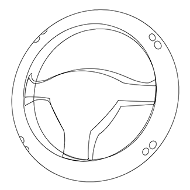
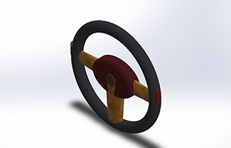
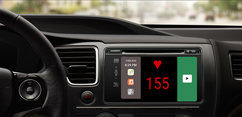
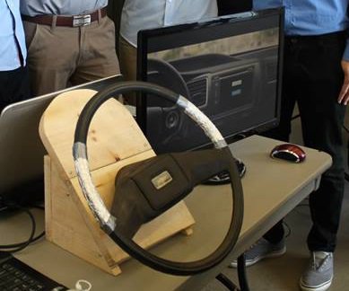
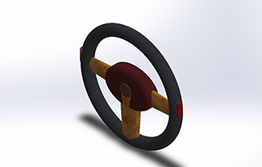
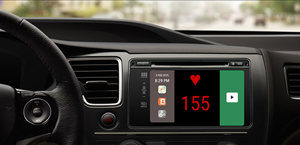
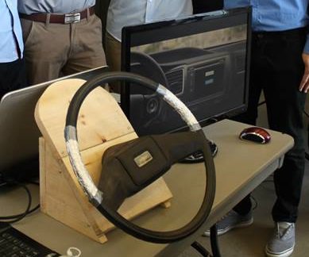

Road Rage Detector
Bio-sensor integrated in to a car steering wheel in order detect road rage. Follwing detection, music is utilized to mitigate the anger in order to diminish anger related driving accidents.
Tools:
- HTML5+CSS3
- TrueSense Bio Sensor




Steering Wheel Integration

Steering Wheel Rendered

Webapp
